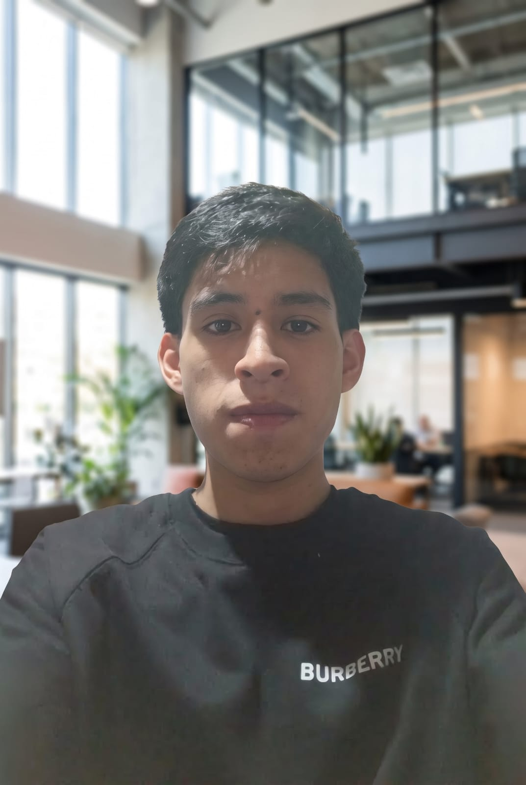

Arquitectura Limpia en Spring Boot: ¿Por dónde empezar?
Aprende a estructurar tus paquetes y responsabilidades en Java para evitar el código espagueti y construir APIs escalables.

Ingeniero de Software enfocado en el desarrollo Backend y Full Stack. Transformo la complejidad de los requerimientos de negocio en arquitecturas escalables, APIs de alto rendimiento y código limpio.
Construyendo el futuro digital a través de bases sólidas y metodologías ágiles.
Como estudiante del 7.º ciclo de Ingeniería de Sistemas e Informática en la UTP, poseo una base teórica inquebrantable que complemento con práctica constante. Domino el ecosistema Java, Spring Boot y Angular, asegurando que el frontend y el backend se comuniquen con máxima eficiencia.
Pasión por la Arquitectura Sólida: Me rehúso a escribir código sin planificación. Aseguro la calidad de mis entregables aplicando ingeniería de software desde la fase cero: diseño diagramas de bases de datos relacionales/NoSQL, flujos de procesos, diagramas de clases, despliegue, casos de uso y notación BPMN. Esta mentalidad me permite identificar cuellos de botella antes de que existan y garantizar plataformas 100% escalables.
Servicios B2B & Particulares | Chimbote, Perú
Gestión completa (End-to-End) del ciclo de vida del software. Traduzco modelos de negocio complejos en soluciones técnicas eficientes, asegurando tiempos de carga rápidos, seguridad de datos y una experiencia de usuario impecable.
Levantamiento y análisis de requerimientos.
Diseño e implementación de APIs RESTful.
Gestión de Bases de Datos SQL y NoSQL.
Integración de Patrones de Diseño (POO).
Un vistazo a los ecosistemas que he construido.
Sistema integral desarrollado para el consumo eficiente de mangas y manhwas. Se integra de manera síncrona con la API de MangaDex para indexar títulos, gestionar catálogos y renderizar imágenes de capítulos en un visor optimizado para web.
Ver Código FuentePlataforma empresarial para la administración centralizada de inventarios y procesos de ventas. Implementa autenticación segura, control de permisos basados en roles (Admin/User) y trazabilidad completa de transacciones comerciales.
Ver RepositorioBoya marítima automatizada programada con MicroPython (ESP32) para la captura de variables ambientales. Los datos son procesados mediante Machine Learning en Python y almacenados en un backend para su análisis preventivo.
Ver DocumentaciónGuías, buenas prácticas y lecciones aprendidas en el desarrollo de software.
Aprende a estructurar tus paquetes y responsabilidades en Java para evitar el código espagueti y construir APIs escalables.
Manejo de Observables, Tipado Estricto con TypeScript e Interceptores HTTP basado en el caso de uso de MangaDex.
Edu Jampier
Fecha • Tiempo de lectura
Estoy preparado para sumarme a un equipo dinámico como Desarrollador Junior Backend o Full Stack. Si buscas un perfil estructurado, metódico y apasionado por resolver problemas técnicos, estás en el lugar correcto.